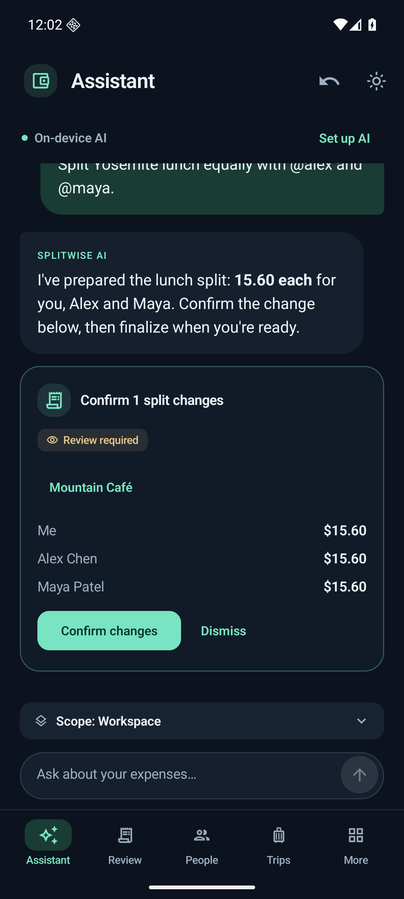

PROJECT NOTES / APPLIED AI
A small model.
A real workflow.
Splitwise AI is a personal expense workspace with a conversational assistant, a web app, and a native Android app. It explores what happens when a compact model learns an application’s tools—and the application keeps control of the ledger.
Explore the source ↗
From a sentence to a safe action.
“Split this $12 lunch equally between me and Alex” sounds simple. An assistant has to select the right operation, identify the participants, find the correct expense, and generate a valid tool call. The application then calculates two 600-cent shares, validates the proposal, and asks the user to confirm.
The agentic workflow combines tool calls, tool results, and follow-up responses. It can organize trips, prepare split proposals, save scoped context, and answer balance questions. Expense changes and repayments require explicit confirmation; ledger arithmetic, version checks, and persistent undo live in application code.
Local intelligence, practical interfaces.
- On-device inference: the native Kotlin/Compose Android app runs Gemma locally. A separately supplied fine-tuned bundle can be imported through model settings.
- Local web inference: the web app supports an experimental fine-tuned E2B model on the app server’s computer, alongside a hosted AI option. An unavailable local model fails explicitly instead of silently switching to hosted AI.
- Real workflows: CSV statement import, manual expenses, shared trips, merchant rules, split templates, reporting, and workspace transfers.
The fine-tuned model is experimental. Desktop runtime and model-loading checks passed; physical-phone validation of this candidate remains pending. Web and Android workspaces do not automatically synchronize. This is an independent project, with no connection to the Splitwise service.

Teaching a small model to use tools.
The experiment trained two independent QLoRA adapters from the same official Gemma 4 E2B checkpoint. Each saw 2,476 synthetic training episodes for one epoch, serialized for either the full tool interface or a reduced one. Complete trajectories teach the model to choose an operation, provide arguments, read the result, and respond appropriately.
The reduced interface moves mechanical work into application code: supplying observed record versions, converting dollars and percentages into ledger units, and resolving an omitted expense ID only when exactly one expense is selected. The model still chooses the operation, people, and scope.
| Configuration | Completed |
|---|---|
| Base model, full tools | 12 / 128 · 9.4% |
| Base model, reduced interface | 26 / 128 · 20.3% |
| Broader fine-tuning, full tools | 99 / 128 · 77.3% |
| Broader fine-tuning + reduced interface | 104 / 128 · 81.2% |
Broader training supplied most of the completion gain. Simplifying the interface added a smaller improvement. No held-out scores were used to select checkpoints or hyperparameters.
What these results do—and don’t—say
These are matched CUDA/NF4 experiment results, not Android or web-serving benchmarks. The cases are synthetic, and related templates are correlated. The results measure this experiment; they do not estimate production reliability.
The best configuration still failed 24 of the 128 fresh cases. Clarification performance regressed from 15/15 to 10/15, with occasional guesses about ambiguous people and claims of success after rejected calls. Its median latency was 16.22 seconds, versus 14.04 seconds for the base/full configuration. Fine-tuning improved task completion, but did not automatically improve speed or remove the need for validation.
The design lesson: combine task-specific learning with a simpler tool contract, and keep financial correctness and user approval in deterministic application code.
Still exploring.
This project brings together the parts of AI engineering that interest me: making small models useful, designing agent workflows, and measuring where a system actually works. Next questions include mobile validation, better clarification, and reliable completion reporting.
← Back to selected work